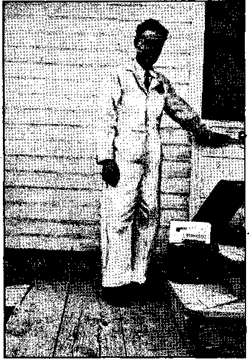
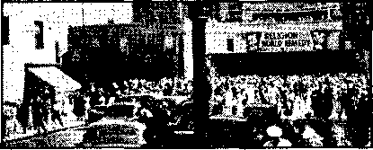
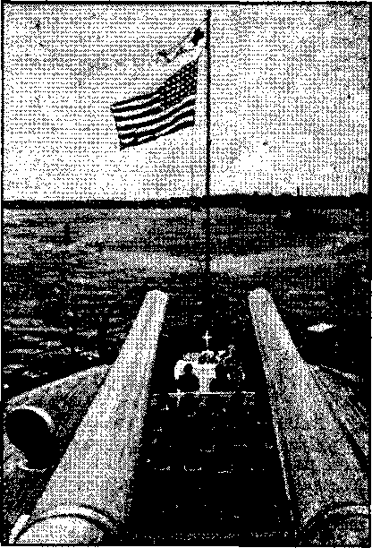

IT IS HAPPENING HER£!


Feigned Patriotism at Ida Grove, Iowa
Counsel by J. F. Rutherford
The New Government
British Comment
Published every other Wednesday by WATCHTOWER BIBLE AND TRACT SOCIETY, INC.
117 Adams St., Brooklyn. N. Y., U. S. A.
Editor Clayton J. Wood worth
Business Manager Nathan H. Knorr
Five Cents a Copy
$1 a year in the United States $1.25 to Canada and all other countries
NOTICE TO SUBSCRIBERS
Remittances: For your own safety, remit by postal or express money order. When coin or currency is lost in the ordinary mails, there Is no redress. Remittances from countries other than those named below may bo made to the Brooklyn office, but only by International postal money order.
Receipt of a new or renewal subscription will be acknowledged only when requested. Notice of Expiration is sent with the journal one month before subscription expires. Please renew promptly to avoid loss of copies. Send change of address direct to us rather than to the post office. Your request should reach us at least two weeks before the date of issue with which It Is to take effect. Send your old as well as the new' address. Copies will not he forwarded by the post office to your new address unless extra postage is provided by you.
Published also in Afrikaans, Bohemian, Danish, Dutch, Finnish. French, German, Greek. Hungarian. Japanese, Norwegian, Polish, Portuguese, Spanish, Swedish, Ukrainian; also special Australian edition in English.
OFFICES FOR OTHER COUNTRIES
England 34 Craven Terrace, London. W. 2
Canada 40 Irwin Avenue. Toronto 5, Ontario
Australia 7 Beresford Road, Strathfleld, N.S.W.
South Africa 623 Boston House, Capo Town
Entered as second-class matter at Brooklyn, N. Y., under the Act of March 3, 1879.
Crimes Taught by Roman Theologians
♦ If any man conceals another’s property, for the support of himself and his family, when asked, he may say that he has concealed nothing. For example, a priest may equivocate before a secular judge, that he is no delinquent, by understanding the judge is/not a competent lawful authority to receive the testimony of ecclesiastics.—Tamburinus, Lib. 3, Cap. 4, Sect. 2, page 27.
A woman may take the property of her husband, to supply her spiritual wants, and to act like other women. [In plain English, wives and daughters may steal from their husbands and fathers, to satisfy their confessor priest.]—Gordonus, Theolog. Moral. Univ., Lib. 5, page 826.
If an adulterous priest, even aware of his danger, having visited an adulteress, is assailed by her husband, kills the man in his own defense, it is not criminal.— Henriquez, Sum. Theol. Moral., Vol. 1, Lib. 14, Cap. 10, page 869.
He who is not bound to state the truth before swearing, is not bound by his oath, provided he makes the internal restriction that excludes the present case. —Charli, Prop. 6, page 8.
A child who serves his father, may secretly purloin as much as his father would have given a stranger for his compensation.—Escobar, Theolog. Moral., Vol. 4, Lib. 34, Sec. 2, Prob. 16, page 348.
If a man becomes a nuisance to society, the son may lawfully kill his father.— Dicastillo, Lib. 2. Tract. 1. Disput. 10, Dub. 1, Num. 15, page 290.
The rebellion of Roman priests is not treason, because they are not subject to the civil government.—Emmanuel Sa, Aphor., page 41.
Priests may kill the laity to preserve their goods.—Molina, Vol. 3. Disput. 16, page 1768.
A man condemned by the Pope may be killed wherever he is found.—La Croix, Vol. 1, page 294.
“And in His name shall the nations hope.”—Matthew 12:21, A. R.V.
Volume XXII ' Brooklyn, N. ¥., Wednesday, June 11, 1941 Number 567
Feigned Patriotism
THE veil of FEIGNED PATRIOTISM hag been drawn^over one of the most shocking crimes this country has ever witnessed. To hide the criminal assaults on the parents and children of Jehovah’s witnesses, which were begun long before the present emphasis on flag-saluting, the attackers pretend a great fervor for America’s safety. The flag-wavers proceed with their subversive work while the public is yet beguiled into thinking that it is all done in the cause of patriotism.
Let the point be made in the outset that what happens to Jehovah’s witnesses is everybody’s responsibility in this nation; Therefore awake, Americans! Decide whether you wish to pretend that mobbing law-abiding citizens who obey God first of al!, and snatching away their children to reformatories, is done to preserve the safety of the United States, or whether you perceive that such conduct is Hitler’s way, the road to Nazism, from which no travelers return. Your decision and subsequent course of action are of first importance to you, because upon them rest your eternal destiny. Therefore choose carefully and be not deceived by “good words and fair speeches” (Romans 16 :18), nor by the starry labels of red, white and blue, nor the feigned patriotism which covers dark deeds.
It is your life that is in the balance; for the people of this nation and all nations are on trial and what they do as regards Jehovah’s witnesses will be 'deemed by the great Judge, Christ Jesus, as done unto Him. (John 5:22) “Then shall he answer them, saying, Verily I say unto you, Inasmuch as ye
JUNE 11, 19*1 did it not to one of the least of these, ye did it not to me. And these shall go away into everlasting punishment: but the righteous into life eternal.” (Matthew 25: 45, 46) Therefore the treatment of Jehovah’s witnesses, and specifically the flag salute, since it has been made a crucible to melt their courage, are issues of vital concern of all creatures who stand trial today before the Elder Brother of these humble folk. The flag salute has been made a test of their obedience to Jehovah God, who forbade the worship of inanimate objects. (Exodus 20:4,5) The founders of this land never intended that the flag should be set up in the place of the Lord. It was the symbol of the laws of a government that once made an honest effort to serve Jehovah.
The patrioteers have appropriated this fine symbol to cover up their lawlessness. Of them George Washington’s words sound prophetic: “Guard against the impostures of pretended patriotism.” Our forefathers knew that unscrupulous men would attempt to hide treacherous and wicked designs behind a patriotic front in order to delude the people. These impostors have always sailed under the banner of protectors of the country’s weal. In this disguise they anticipate little opposition while defenders arise on all sides to thus unwittingly shield their crime. That is the sad picture that confronts America today. It is the picture of a nation, which for years has worshiped Jehovah God as supreme, now clamoring for the blood of His servants. Thus observe the poisonous fruit of “pretended patriotism”.
3
The real objective of those who seek the humiliation and death of law-abiding citizens is not the country’s welfare. Their patriotism is feigned, a mere sham, full of the same love as the kiss of Judas Iscariot. It is the sheep’s wool covering the ravenous wolf. Moreover, it is the costume which the Roman Catholic Hierarchy’s Nazi agents wear in every country that they profess to “protect”. Now they say this country must be protected from conscientious school children and their law-abiding parents who openly declare their allegiance to Jehovah, the same God to whom Roosevelt claims to pray. Thus this country has begun to be favored by the “protection” of Hitler’s advance agents, the Hierarchy, her priests, and her Legion. Just to what extremes such “protectors” are willing to go is well demonstrated in the fate of Finland, Poland, Belgium, and France. “Guard against the impostures of pretended patriotism.”
In what manner this country is ‘endangered’ by the righteousness of upstanding children the Hierarchy does not explain. But the virulence of their hatred is exemplified in the following:
One thing is sure and certain, there is no country where its citizens are more of one heart. In recent months this has been proved in the name of “the witnesses of Jehovah”, led by Judge Rutherford of Brooklyn. Although no intelligent American will seriously take stock in this religious outfit, still, due to our die-hard bigotry, the “witnesses” have been tolerated and, in some sections, actually allowed to thrive on their impossible proposals—until they made one mistake, and that was to overemphasize their lack of respect for the American flag. Indignation. Now a wave of indignation is sweeping the country. . . . But once these people openly, insultingly, and defiantly turned their backs on the Stars and Stripes, 0, that was a different story I I t will mean the eventual breakdown and disappearance of “the witnesses of Jehovah”, for the American heart has been touched, national indignation has been aroused, general patriotic feeling has been spurred.
Later, under “Patriotism”, the Catholic monsignor continues:
In the instances of “the witnesses of Jehovah”, it took an insult to a piece of cloth to wake up some of our leaders.
So writes “Rt. Rev.” Mgr. Peter M. H. Wynhoven, editor in chief of Catholic Action of the South, in The Brooklyn Tablet, November 1G, 1940, in a syndicated article entitled “Wild Wisdom” anti subtitled “God Bless America”, appearing in many Catholic periodicals.
The above is typical of Catholic abuse in the name of patriotism. Similar outbursts have been written by Edward LSdge Curran, president of the International Truth Society; “Father” Felix, O.S.B.; Archbishop Spellman of New York; and others, in nearly every Catholic newspaper in the world.
Analyses of such publications generally disclose the peculiar Catholic intolerance of American principles which often appears in the same articles that rant of patriotism. For instance, Wynhoven in the above refers to American tolerance of Jehovah’s witnesses as “die-hard bigotry”; their advocacy of God’s kingdom under Christ is an “impossible proposal” ; and refers to mob attacks upon them as a belated “awakening” of “our leaders”. Archbishop Spellman, while extolling the American Legion in his speech to them in Boston last summer, found occasion to sneer at the “organization” which had “disrespect for the Hag”. His words were easily understood as approval of the mob attacks on Jehovah’s witnesses, in which many Legionnaires had but recently engaged, In contempt of the law.
Writers in the Jesuit organ America refer to the United States as a “pseudo-domocracy”, and a Jesuit speaker averred that “Liberalism and Catholicism cannot live under the same roof”. All Catholics regard the laws of foreign Vatican as above the lawns of the United States. “We [the pope J hold upon this earth the place of God Almighty.” (Pope Leo XIII, Great Encyclical Letters, page
304) Wynhoven’s opposition to religious freedom is supported by Catholic law: “Let us examine that liberty in individuals, which is so opposed to the virtue of religion, namely the liberty of worship, as it is called. This is based upon the [American] principle that every man is free to profess, as he may choose, any religion or none. . . . This is no liberty, but its degradation.” (Pope Leo XIII, Great Encyclical Letters, pages 149-150) Page 151 contains this piece of Papal wisdom: “We must now consider briefly liberty of speech and liberty of the press. It is hardly necessary to say that there can be no such right as this.” The same authority says a government “by the will of the people” embraces concepts “wholly at variance with the truth”. (Page 122)
Forcing people to violate their consciences is also in accord with canon law of the Catholic Church: “The mission of the Catholic Church to educate embraces every nation without exception, and' all men, within or without her membership, and there is no power on earth that may oppose her or stand in her way.”—Pope Pius XI, Divini Illius Magistri, Encyclical on Education, 1931.
In view of the avowed hatred of Catholic authorities for all forms of freedom, one might reasonably ask: “Why are they interesting themselves in the salute of the flag, America’s symbol of freedom!” The answer is here made, with proof to follow, and is, to wit: The great interest in compulsory flag-saluting : which the Hierarchy has lately developed, originated in their desire to rid themselves of exposure. They found the words of Jehovah’s hailstone truths sweeping away their “refuge of lies”. (Isaiah * 28:17; Revelation 16:21) They think
that by ridding themselves of Jehovah’s witnesses they will hear no more tormenting truths that expose their organization as anti-God; nor be further disturbed by the declaration of the Lord’s coming vengeance. They do not believe
JUNE 11, 1941 that the Lord will destroy a “church” of such antiquity and long-standing. But they see large numbers of the Catholic population deserting priest and tradition in order to serve Jehovah. The falling away of such numbers, part of “a great multitude which no man could number”, lowers Papal prestige, and, of course, is not to be tolerated by the most intolerant organization that has ever existed. On this point it is interesting to note how perfectly the Lord foreknew and pictured this course of action in the conspiracy of Mount Seir, typifying this same religious element, with Moab and Ammon, formed for the purpose of annihilating His typical people, Israel. (2 Chronicles, 20th chapter, discussed in the Watchtower magazine, under the title “His War”) Likewise in her fight the Hierarchy has called in politicians and dictators, the modern Ammonites; the Jewish and other commercial elements, foreshadowed by Moab; school boards, mobsters, American Legionnaires, partial judges, and anybody else in the byways and hedges, that could be induced to fight against Jehovah’s people.
Here again the Lord foreknew what her course of action would be when seized by the desperate desire to stop the rising tide of exposure. When Sisera was faced with the necessity of fighting against the army of Israel under Barak, 'he gathered by cry, or proclamation,’ his forces. “Likewise the Roman Catholic Hierarchy, in the lead of religious systems, sent out their call to all anti-Theocratic powers and forces of the earth.”— Watchtower magazine, January 1, 1941, paragraph 17, which see. '
In both the above pictures the religious element was thoroughly humiliated and defeated, thus foretelling the doom of religion today. Thus it appears that the Hierarchy is certain to go down to defeat, and all her schemes, including the compulsory flag-salute, will fail.
But it is valuable to examine her sham patriotism, and disclose its very unpa^ triotic motives, in order to enlighten
those who might otherwise be fooled. They must be'warned of the death-deal* ing subterfuges of Rome. The Lord has commissioned His people to ‘‘testify to the truth", and that for the benefit of all who may be seeking. This article will deal further with the Hierarchy’s mock love-of*country, which has behind it the desire and intention of destroying the United States and every other nation that will not bow to the banner of the Italian pope. Read qn if you wish to protect yourself against “the impostures of pretended patriotism”, and to avoid the evil fate of those who fight against the Lord God of Hosts. The intelligent are grateful to Jehovah’s witnesses, who seek to save them from such a catastrophe. It is not for the Hierarchy’s sake, but in the interests of the reasonable and honest, that the following facts are presented.
The Hierarchy dons the uniform of every nation, and gives loyalty to none. Her agents are found in every nook, cranny and distant outpost of the world. Hers is a vast international organization with roots in every land, drawing sustenance from the people, which organization is likened in the Scriptures to a “great whore that sitteth upon many waters”, “the mother of harlots and abominations of the earth,” (Revelation 17:1, 5) This prostitute is also pictured as riding upon the backs of the kings of this world; which means that she will rule all the governments of earth for a time. (For a full discussion see Light, Book Two, written in 1930; and compare it with events today.)
The Hierarchy is fast achieving complete control of the world. Her priests and minions, whose only loyalty is to the pope, of course assume great loyalty to the countries in which they reside. They are in the forefront among flag-wavers, and their profession of allegiance to every flag is loudest and best advertised. Such outward demonstration of fealty serves as a shield or smokescreen to hide
her schemes to overthrow the countries not yet under the iron heel of Nazi-Eascism. . ,
Of those that still require “remodeling” to conform to the pope’s “new order”, England and the United States are the chief. England is at least informed of her peril, as wfiU appear later to the reader. But America has become so infested with Nazis, Communists, Coughlinites, and other Romanists who clamor for the lifeblood of this democracy, that the body politic is near dissolution. These Catholic breeders of internal strife openly declare themselves for Hitler, advocate “bullets instead of ballots”, to reduce this country to Papal serfdom. The treasonable purpose of the Roman Catholic Hierarchy is broadcast by radio and published abroad. And, to insure success, the treacherous schemes are advanced as in the public welfare. Around them are woven emblems of the American flag. Upon them are bestowed copious blessings of patriotic fervor, fully publicized by the press, without omitting’ large photographs of Catholic prelates practically draped by the flag in the background. Is it then so amazing that Americans do not recognize the Papal wolf in its elegant American uniform? ,
Catholic declarations of fealty are accepted at several hundred percent by the people; and they are aided to do this by the extravagant publicity accorded such claims by the Vaticamejrican press. The servile obedience rendered Rome by the news agencies in this country bring to mind the henpecked husband, who, when his wife spoke, jumped twice., for fear she did not see him the first time.
The Hierarchy’s role of patrioteer is also facilitated by the ridiculous reverence with which the black garb and collar -turned-backvrard are usually regarded. Foolish creature worship, together with “three cheers” for the red, white and blue Romanists loudly echoed from the Vaticamerican press, sufficiently well transforms a Catholic-Nazi into a bona
fide minuteman; especially when the magician at the Vatican endeavors to make it unhealthy to observe too closely and report the mechanics of this transformation.
There are a few slip-ups, however. The impersonators lose their make-up or are discovered in the quick-change. Such mishaps make control of the press an absolute essential, as will be observed as we go along. Since she has staked her all on Hitler, even with the best efforts of the most competent liars in the world, sometimes a bit of incriminating evidence will leak out. Take “Father” Schulte for example. The “Nazi ‘Flying Priest7 ”, former German war ace, causes the Toronto Globe and Mail anxiety:
The authorities would allay apprehension if thej' made a publie statement concerning the activities of “Father" Paul Schulte, “flying priest of the Arctic,” who is alleged to have established petrol caches and made complete aerial maps of the Hudson Bay region while ostensibly engaged in missionary work in the subarctic. We are now informed that the Canadian authorities intercepted letters from the former German war ace, who was making soundings in the Albany River and the James Bay District and sending the information thus obtained to the German Embassy in Washington.
It seems that the people and the government of this nation should be vitally concerned in Schulte’s interesting “missionary” work, especially since Buffalo and Detroit would be as vulnerable to attack from a base near Hudson Bay as many Canadian cities. But our newspapers, without exception, omitted this item. No doubt they-felt that its publication would shock the religious susceptibilities of “Father" Schulte’s friends here. That was a very considerate attitude on the<part of American publishers, wasn’t it?*
* Latest advices to Consolation are that “Rev.” Paul Schtjlte, whose address has been given as Washington, D.C., is now located in Wagner, S. Dak. This is within 500 miles of the Canadian border, two hours away by plane.—Ed.
JUNE 11, 1941
The Converted Catholic, published at 229 W. 48th St., New York city, in reporting the above adds a few sentences worthy of serious thought :
“It occurs to us that we also had a much publicized ‘Glacier priest’ in this country, the Jesuit Father Bernard Hubbard, about whom we have heard nothing of. late. He was active in Alaska.” No doubt he is engaged in a bit of military missionary work such as mapping the rivers, mountains, and preferred sites for Axis landing fields in Alaska.!
The worst of Catholicism is embodied in the principles and action of the Jesuits. They were founded in 1540 by Ignatius Loyola, a wounded and demented Catholic soldier. Their crimes have been so unspeakable in the four hundred years of their festering growth that most nations have, at one time or another, expelled them. An interesting account of their diabolical schemes is found in the Philippine magazine (Manila) entitled: The Jesuits and Reaction, in which they are described as “the first Fascists on earth”. The author states:
Indignation ran so high against the [Jesuit] Order in the Catholic world that the authority of the Holy See and Catholicism itself were seriously endangered. For this reason the tWnr Is the Akmy So Helpless?
Under date of March 11, 1941, the Philadelphia Record quotes the “Reverend Father” Bernard R. Hubbard, styling himself as “Glacier Priest”, as saying: .
“I conferred last week in Washington with the army and navy intelligence services. I pointed out to the two services sites for air bases which I think are more feasible than those already selected, and suggested for a submarine base, Takii Harbor, on the Alaskan Peninsula, of which I have the only map in existence.”
. The United States has owned Alaska for 74 years. In that time it has had many thousand well-paid army and other officials there constantly, and it would be interesting to know, just at this time, why it is now so helpless that it has to have the assistance of a Catholic priest to tell it what to do in what is really its own particular job. And the same applies to the navy. Also, it would be lovely to know how it comes that a Catholic priest has the only map in existence of the best submarine base bn the Alaskan Peninsula.—-Ed.
7 *
Pope ordered the Society of Jesus dissolved in the breve “Dominus ac Redemptor noster”, dated July 21, 1773. The document speaks of the great ruin of souls caused by the Jesuits. . . . They returned to the Philippines in 1859, . . . The order appears to have been more or less quiescent in the Philippines until recently. But in the light of its record, its “education al” as well as its commercial activities may well be watched, and. above all, its under-cover political work, which might prove as disastrous to democracy in these Islands as elsewhere in tfie world.
The above is quoted from the November, 1940, issue of the Philippine magazine. To showr how well the author knew his priests, note the following Associated Press dispatch quoted from the St. Louis Globe-Democrat, extra final edition of January 13, 1941:
German Priest at U.S. Basu Accused
Manila, January 13 (Monday).—Father Luis Bogel, German Catholic priest at Subic, location of the United States navy base, was summoned today to appear before a deportation board January 20 [to] show cause why he should not be deported from the Philippine Islands as an undesirable alien. Three charges were lodged against the priest: Totalitarian propaganda, exaltation of the Aryan race, and that he emphasized the futility of resistance by small nations to peaceful overtures of strong nations.
The people of the Philippines realize the danger they may be in w'hen they receive full independence from Uncle Sam. They also had their bellyful of priests during Spanish domination.
The New' York Times passed up this little item just as they did the one about “Father’’ Schulte. James J. Murphy, former priest and now' associate editor of 7'h,e Converted Catholic, states in the issue of February, 1941:
The venal press of America that was afraid to hint at the German espionage of Father Schulte (as revealed in The Converted Catholic of December) has given wide publicity to his self-glorification in his autobiography “The Flying Priest Over the Arctic”. The • New York Times not only advertises it, but gives it a “build-up” in its Boole Review section of December 22, “Here, is one airplane that seeks to save—not destroy—human lives!” [sic]
The wmrld has learned a new' definition of “save” from Schulte’s master, Hitler. Schulte w'as, no doubt, in the act of “saving” Canada in the same manner in which Hitler “saved” Belgium, Poland and France. This form of “salvation”, which is fortunate in having the blessing of the internationally “patriotic” pope, places the “saved” either in slavery or in the ground. The w’riter does not require this service thus recommended by the New York 'Times. There is no objection, however, to its sponsors’ enjoying it all they wash.
The use of the cowl and*the priest to hide subversive activities has been learned by the Japanese, who know a good trick wdien they sqe one. The amusing part is that after learning this device from , Rome they immediately suspect the British of using the same methods. The Hongkong T elegraph of December 2, 1940, reports the action of Japan in ousting English and American bishops of the Protestant churches only:
It bus already been reported that three English bishops of the Nippon Seikokwai (Japan Holy Catholic Church, the United Anglican communion [actually a Protestant church similar to the Church of England]) were obliged to resign as the result of an agreement made by their Japanese colleagues without consulting them. The three American bishops were absent in the United States attending the triennial conference of the Church; they will he expected to resign when they return. . . . Seven Japafiese officers of the Salvation Army in Tokyo and a number more in Peking were arrested a few days later and also some British and Canadian missionaries in Seoul. .
Two more significant circumstances arc noteworthy in this Japanese attack on foreign religious organizations: (1) the reason for the attack:
An officer in the [Japanese] War Office issued a statement declaring that “the Army, which is vitally interested in national defense through thought, is obliged to take determined steps regarding the fact that the followers of any faith, under the cloak 0/ religion, may act as agents for foreign espionage.”
and (2), the immunity of the Roman Catholic Church from such attack:
The other Protestant communions will find it advisable to follow the example of the Nippon Seikokwai and the Salvation Army [who abolished foreign leadership]. The Roman Catholic Church is presumed to be less likely to incur “investigation”, since its foreign headquarters are in Rome.
Dissimulation, disguise and deceit are the time-tested weapons of the Devil. The Catholic Hierarchy, in using such devices, is merely practicing the methods of her father. “Ye are of your father the devil, and the lusts of your father ye will do. He was a murderer from the beginning, and abode not in the truth, because there is no truth in him. When he speaketh a lie, he speaketh of his own: for he is a liar, and the father of it.” (JohnS; 44) For centuries the Hierarchy has posed as man’s benefactor, and has claimed to have the sole right to administer salvation. Their claims are lies, and their practices are abominations. They have attempted to spread over the stealthy leopard of destruction (whose bloody maw holds the lives of men slain and of all freedom destroyed) a covering after the patriotic style of the country destined to be devoured. In America they use the minuteman regalia, although they had no part in the fight this country made for her independence; or they employ the American Legion's stirring khaki. This too is false. When the real fighters of the Legion were dying in Flanders the pope’s agents were fighting with all their power for the defeat of the Allies.
The Gospel Witness, Toronto, Canada, issue of December 5, 1940, reproduces a letter by J. A. Kensit to Rt. Hon. Sir John Anderson, minister of Home Se-
JUNE 11, 1941
curity, England, in which he warns against the
“possibility of a real danger to this country arising from, the presence of a large number of alien priests, monks, and nuns belonging to the Roman Catholic Church. . . . England, being Protestant, is under the condemnation of the Papal Italian power, as outlined many years ago by Cardinal Manning, who, at the start of the revivified Roman Catholic campaign in England, used the following words, as will be found in his Sermons on Ecclesiastical Subjects, Vol. 1, pages 166-7 :
“ ‘It is good to be here in England. It is yours, right reverend fathers, to subjugate and subdue, to bend and to break the wall of an Imperial race. You have a good commission to fulfil and great is the prize for which you strive. England is the head of Protestantism, the centre of its movements, the stronghold of its powers. Weakened in England, it is paralyzed everywhere; conquered in England, it is conquered throughout the world. Once overthrown here, it is but a war of detail. All the roads of the world meet in one point, and this point reached, the whole world is open to the Church’s will.’
“Surely language of this kind shows that there has been a long-established Fifth Column of a clerical type, working for England’s undoing. Our duty, at any rate, is to call your attention to certain facts which have a direct bearing on the situation today.
“Command Paper 1108, published by order of His Majesty’s Government after the end of the last war, printed a letter dated Berlin, 28th November, 1914, It contains the following words: .
‘First send the priests, as I need them for a special purpose here—you can guess—for — ... If the priest or priests can get to Christiania (Norway) . . . Warn all our people, too, of the present intrigue at Rome to bring pressure of religion to bear on a question wholly political and national.’
“There is much evidence in that Command Paper which makes plain the intriguing hand of the Romish Church in political concerns. Moreover, as the Church of Rome has been such a disturbing factor in European politics for generations, it leaves it under very strong
anti-British suspicion whilst Italy is engaged in war with us. During the last war, gpart from the Irish matter [Sinn Fein Rebellion, see below]', even the Pope’s private Chamberlain, Monsignor Gerlach, was sentenced in Italy to life imprisonment on conviction of most diabolical plots connected with the destruction of two Italian battleships, one in September, 1915, and the other in August, 1916. ,
“Again the Timet; of February 12, 1917, had the following statement:
‘The Jesuits of Gijon possess a wireless station which is working in complete liberty. An official of the Telegraphs who attemped to take control of it was transferred to another post on the demand of Father Bilbao.’
“How far convents and monasteries were utilised for espionage it would be impossible to say, but during the course of the last war one priest was caught in an endeavor to smuggle a telegraph code into the country, and the Rev. Father Michael Daly was sentenced to a month’s imprisonment for offenses against national security.
“The Italianized Papacy is as active now as ever against us. The Times [London], on the 20th of last month [June 1940], published a report that ‘two Italian Archbishops and 47 Bishops have petitioned Mussolini to insist that the Holy Sepulchre in Jerusalem be taken out of the hands of Great Britain and entrusted to the Royal House of Savoy [of Italy].’
“In combing out all the possibilities of danger, the Government should have in mind that the Roman Catholic Church demands its members to subscribe to the claim ‘that the Pope is above all temporal rulers.’ This is the language of The Tablet [England]—the leading Roman Catholic paper published in this country, and as recently as the 15th of June [1940]. '
“Our contention [Kensit wrote at the direction of the Council of the English Protestant Truth Society] therefore is, that no alien priest, monk or nun should be left in a position of freedom, but should forthwith be interned. “Yours faithfully,
(Signed) J. A. Kensit [London]”
Britain is also threatened by the Papal-induced defection of three important members of the Empire, Canada, Ireland, and Australia. Canada has substituted priest-rule for freedom. “Father” Lanphier (recently quoted -herein as abusing Jehovah’s witnesses by radio) attacks all Protestant faiths and is given carte blanche by CBS; no Protestant minister in Canada is permitted the facilities of the broadcasting system; Lapointe, as Catholic minister of Justice, performs the Hierarchy’s will, Prime Minister King acquiescent. Both the Canadian censor and the Catholic press have attempted to silence even the sermons of Dr. T. T. Shields, of the Jarvis St. Baptist church in Toronto, and refused him all broadcasting privileges, because of his exposures of Catholic treachery to the British Empire.
The Hierarchy began in Canada by outlawing Jehovah’s witnesses. Now it appears that Protestants are under the Papal ban. On January 16,1941, they proceeded against Jehovah’s witnesses in Australia, of course under the guise of safeguarding national welfare; and all other opponents of Rome may count the days until they too are the objects of attack. This treachery of the Papacy was predicted by Prime Minister Hughes in a statement from Melbourne, August 3, 1920:
“I see that Archbishop Mannix, continuing his anti-British propaganda, evidently wishes the Americans to believe that he represents the public opinion of Australia. He does not represent the public opinion of Australia on the Irish question or any other; he is merely an acknowledged leader of Sinn Fein.
“From the day of his arrival in Australia, he set to work to fan the dying embers of religious bigotry into a fierce blaze, and gather around him every fanatical alien and Sinn Feiner in the country. During the War he worked incessantly and as openly as he dared, to prevent recruiting, help the enemy, and insure the defeat of the Allies.”—The Times (London), August 4, 1920.
Catholicism’s anti-British efforts are
CONSOLATION
reflected in the neutrality of southern Ireland. The Protestant northern counties of Ireland are staunchly fighting against Nazism. As for the position of the Vatican, note the following broadcast from Rome carried by the London Daily Mail and the Toronto Globe and Mail, December 28, 1940, and several American newspapers: '
“Should the Irish people be forced to defend themselves against British aggression they can be assured of the full and wholehearted help of the Axis powers. Beside this .military help the whole. Catholic world would be on their side"
Further corroborating the Hierarchy's vicious hatred of England is the following dispatch from Zagreb, Catholic stronghold inf former Yugoslavia:
Zagreb, Yugoslavia, Feb. 12 (A.P.).—Jails here were crowded tonight with persons arrested for questioning in the bomb explosion February 4 in the British consulate building which killed a woman and an engineer.
Several Roman Catholic priests were seized by police. Archbishop Armjkije Stepinac was reported to have gone to Vatican City to report to Pius XII. [Obscure dispatch in San Diego Union, February 13, 1941]
.Surely these facts are sufficient to convince every intelligent man, of whatsoever faith, that the Catholic Church system is the most subversive institution under the sun. It is the friend of no country, but selfishly uses the peoples and nations to accomplish its own advancement. Although at present allied with Hitler in order to achieve world domination, it counts the lives of the German people for nothing. Catholic Belgium and Poland were smashed to sate the pope’s ambition. Protestantism in England and America must likewise perish and then the bloody beast will stalk the earth for a brief period until visited by the Executioner for JEHOVAH. The Scriptures show that the Lord will cause her present allies to rend her to pieces and expose her hypocrisy and filth.—Revelation 1.7th chapter.
JUNE 11, 1941
Through a careful study of the prophecies, considered in the light of events taking place today, the fact emerges as clear as sunlight (as published in Consolation No. 566) that'Hitler is Catholicism’s champion; that his bloody deeds bear the imprint of Jesuit planning for 400 years; that even Mein Kam-pf was written .by a priest; that Hitler is the “sword” of the Roman Catholic Church.
Eew people today consider seriously what is said or written. They are stunned by the pace of living and the imminence of death. Though conscious of a swift current, moving at ferocious velocity, they know noEwhither it goes. This distress has been brought upon them by the Devil. “Woe to the inhabiters of the earth, and of the sea I for the devil is come down unto you, having great wrath, because he knoweth that he hath but a short time.” (Revelation 12:12) In this prophecy the people are represented by the “sea”. In the Scriptural record at Joshua the fourth chapter, the hopeless masses are pictured by the Jordan river rushing down to the Dead sea, a type of Armageddon. Let this and the other evidence presented, together with a careful study of God’s Word, convince the honest that there is no hope of life in the ways pf the Hierarchy, that hers are the “ways of death”. (Proverbs 14:12) Jehovah, through Christ the King, is the only way to life. “I am the way, and the truth, and the life.” (John 14:6) “Salvation be-iongeth unto the Lord.”—Psalm 3: 8.
When the Hierarchy feigns patriotism it is as faithless as her heart. She is your enemy and the enemy of every free nation and decent creature under the sun. When she professes to teach patriotism by inflicting punishment upon God-fearing children and their parents; when she parades her virtuous endeavor to enforce the flag salute and induces others to perform her iniquitous will, it is another act of infamous deceit. Her guise of benefactor is fraudulent; when she speaks of disloyalty and the fifth column she speaks of her own.—Elton Groves.
, 11
Bead the following carefully, and the description opposite.
Fioxna itsco&p. ida ORovt, q>a ccrtxrr, idwa.
tevMdat, jLFKL i. tMl
TAUTUCS
II mill I miMEll iiNHimi I i!ll I nui UIJIHUIIIHHII lUHUllJlHll Util IIH111 IHl Igll UUUJtDUUlM tiHimiiuiiii iiuijiiii. iiiittiiurnnmiiiruimuimiimu11111iiliiiiniiiihiiiuinumiiiiiiwii
LETS FACE FACTS
WE WILL NOT TOLERATE A FIFTH COLUMN !!!
WE LIVE IN AMERICA - LET'S KEEP IT AMERICAN
IF YOU ARE A PATRIOTIC AMERICAN CITIZEN YOU’LL READ EVERY WORD OF THIS ADVERTISEMENT
WHAT TO DO
U Visited by b Jehovah Witness or Other Subversive Agent - - -
L They ere recognized by their doak of religious fanaticism, their victrola records and their various pamphlets meh us “The.Watch Tower • their official organ.
2. Avoid argument or ere of force and violence in dealing with such agents,
3. Secure name of agent if poesihle and where he is from.
4. Firmly refuse to great any such agent further hearing.
5. Notify County Sheriff or thieerfnn-tratlon.
IT IS HAPPENING HER£!
“Breathes there a man with enol so dead who never to himself hath said, this is my own, my native land." —Scott
The American's Creed
I b*0*Te la thp United States of America, an ■ rsromment of the people, by the people, for the people; whose jut power* are derived from the consent of the invented; a democracy In a repqt> be; a MTereim nation of maw lovtrd^n etates; a perfect anlua, one and Inseparable; eetaMehed upon thoae ptfctciplee of freedom, eqtisttty, Justice and bmunity for which American patriot* sacrificed their U**s ftnd tatutea.
I therefore believe It 1* my duty to my coatej to lave it, to support ft* cmtrtJhrtSofl, io ebey It* lews, to teepoet he flat, and to defend h agilaet sU enemlta.
SPONSORED BY
Ida County Americanism League
If this advertisement had been called “Ida County League Against Americanism” it would have been more accurately named. The union of the Roman Catholic Hierarchy [Sacred Heart Church in this setup] with the American Gestapo miscalled the American Legion is enough without dragging in the Ida Grove Commercial Club of businessmen whose sacred job it was to pull the chestnuts out of the fire for America’s biggest racketeers. See the brilliant article of Elton Groves on “Feigned Patriotism”, which occupies the foregoing nine pages of this magazine, and which shows just what the Roman Church is up to in this country and Europe. Read Notanda, on page 2.
It is well known that Roosevelt and the American Legion were in consultation only a short while back to see how the American Legion could be made an informal army to do Gestapo work in this country and how7 only the outcry of a real American patriot in Baltimore prevented the deal from going through. The complaint was made that he had spoken out of turn, and thus spoiled everything. Neither he nor they can Hitlerite us.
It is freely admitted by all students of outrages against the laws and the rights of the American people under the Constitution that no other body of men has as black a record in this respect as the American Legion, and that does not even except the Ku Klux Klan, whose methods the Legion follows. This advertisement in the Ida Grove Pioneer Record is an appeal to the people of Ida Grove to become anarchists and to assure them [vainly] in advance that in their anarchistic efforts they will have the backing of the Sacred Heart Church, the Ida Grove Commercial Club, the American Legion and the Sheriff in a projected illegal campaign of bluff and bluster, an American copy of Hitler’s chosen methods. This bluff will be called and the bluffers will fall flat. Wait and see.
If the United States of America had a patriotic organization of half a million men devoted to the perpetuation of the JUNE 11, 1941
principles which actuated Washington, Jefferson, Franklin and Lincoln, such an organization would be of priceless value to the American people at this critical time, when the Roman Catholic Hierarchy is taking over the country; but when an organization conceived in a spirit of Fascism allies itself with the Roman Catholic Hierarchy, takes orders from the Hierarchy and devotes its energies to the destruction of American ideals and American institutions, claiming ail the time to be one-hundred-percent American in everything it does, it is high time the American people knew the facts. Read Notanda (page 2) again.
Among the notable financiers who organized the American Legion, several have been sent to the penitentiary for fraud and conspiracy. The history of Swift & Company reeks with fraud. They had a big hand in organizing the Legion. One of the principal organizers of the Legion, a man worth thirty million dollars, said he was willing to spend half of his pile to save the other half.
For information as to just what the American Legion stands for, see the article, by Elton Groves, “Does America Need Roosevelt’s Gestapo?” leading article in Consolation No. 550, issue of October 16, 1940; also his article in this issue; also “The Castor Oil Legion”, in No. 555, page 11; or The Persecution of Jehovah's witnesses, published by American Civil Liberties Union, 31 Union Square West, New York City, 10.
Jehovah’s witnesses are Christians, not cowards, not lawbreakers, and not afraid of either cowards or lawbreakers. They have a message from God which they must deliver, and which they do deliver fearlessly at all times. The Ida Grove dogs are barking up the wrong tree. Wait and see. Hypocritical religionists, engaged in undermining American institutions, and hoping to make it a second Germany, have yet to learn the big lesson that they fight against GOD.
Dig up and read your booklet Judge Rutherford Uncovers Fifth (Io lit inn. '
THERE is a plant in Russia, called the “wind witch”, that manifests all the tendencies of a hobo. When it gets well settled in a place, and grows up, its branches curl down and pull up the plant by the roots. Then along comes a wind (instead of a freight train) and the plant goes off to a new location, where at length it takes root again and starts all over again in fresh surroundings.
Another odd Russian plant manifests an indisposition to stay where it started. On wet days the fiber of the plant twists and works its way into the ground, thrusting its seeds downward, so they can get a start in life. On hot days the fiber of the mother plant untwists and she looks out for herself, letting the young ones get along the best they can in the nursery where she left them.
In Sumatra the rafflesia does not bother with either stem or'leaves, but makes up for it with a blossom three feet across, with petals an inch thick. Like Big Business, it lives off smaller fry in the plant world. They do all the work but the rafflesia gets all the income. It dies young, and should.
The water hyacinth believes in living a sailor life. It floats around on the surface of some pool or lagoon. The roots contain air sacs which enable it to navigate hither and yon, as the winds and zephyrs shift it about.
The daridelion is always on the job, ■ arrives on time, rears its head'so it can be seen, overcomes difficulties, refuses to accept defeat, and is pure gold—er— that is, it looks like it, anyway. Besides, it is good for .greens.
Some people have funny names. So have bachelor's-button, bleeding heart, Dutchman’s-bre eches, Jack-in-the-pulpit, kiss-me-over-the-gar den-gate, Johnny-jump-up, painted lady, old man, Queen Anne’s lace, love-lies-bleeding, milkmaid, London pride, Turk’s-cap lily, devil's-bit, queen of the meadow, quaker-ladies, friar’s-eap, Venus’s chariot and Venus’s flytrap. More about that flytrap later.
It is over a century since plant-lovers grafted a tomato vine on a potato stock and raised both tomatoes and potatoes on the same plant. It has often been done since then, and it is said to require no more skill than that required for grafting applq twigs. It is now a joke that tomatoes were once thought poisonous.
You don’t expect a magazine of fact to say that at Largs, Scotland, some Scot planted a clothespin and raised a crop. You shall not have that satisfaction, but you might like to know that in 193,5, in that same place, a clothespin was recovered which had been buried in the turf, and it then had twelve roots. Before you get over the shock, this is to state that, in 1901, at 1705 Wyoming avenue, Scranton, Pa., a poplar tree was cut down, after the sap had started to flow. Six feet of the trunk was buried several feet in the cellar bottom, to make a nice chopping block, and for several weeks thereafter that chopping block sprouted and nourished a branch which grew to at least eight inches in length, in the cellar, and in the dark. It looked rather pale and sickly, but it grew.
After a little while you may be eating chayote potatoes, originally a native of Mexico, but now grown in Florida. You can have the leaves and tender shoots for salad, the fruit for a squash, and the roots for potatoes, and if you live in Florida you can have the vine as an ornamental porch climber. If you are industrious enough you can plant many of them close together, and eat them as asparagus.
■ “The works of the Lord are great, sought out of all them that have pleasure therein. His work is honourable and glorious: and his righteousness endureth for ever.’’—Psalm 111: 2, 3.
WE ARE presenting this list, not in any carping spirit, but because of the outcropping recently of what one member referred to as “those pathetic ' little signs”. If they tell somewhat less than the truth about Americanism, it is our business to say so. No one knows better than we how great it is to be Americans ; but it will be still greater when the ‘ excellent principles asserted are honored more in the performance and less in the breach.
“It’s Great to be an American,” reads one of the stickers, listing some of the , keystones of American freedom. We list some of the holes in the keystones.
I can go to any church I please, . . , just so I’m not a member of the Jehovah’s witnesses. I can read, see and hear what I choose. . . . although, under the terms of the Alien Registration Act, I am liable to be prosecuted for reading books which may be considered subversive. I can express my opinion openly. . . . and get socked with green apples in the “free” state of Vermont, if my opinion is hot popular with the vigilantes, without protection from the local police. My telephone is untapped. . . . unless by an occasional lawless law-enforcer. I can join any political party I wish. . . . just so it’s the Republican, Democratic or' Temperance Party—all others keep out. I can vote for what and whom I please. ... if I am willing to have the vote made the basis for a Dies Committee “expose”, endangering my job or career. I have a constitutional right to trial by jury. . . . but if I am a Negro, this right is nullified in many parts pf the United States. I am protected against unlawful search and seizure. . . . unless, as at Detroit not so long ago, a “law enforcement” agent wishes to drag me from my house in the early morning on changes that are never substantiated. Neither my life nor my property can be forfeited without due process of law.
. . . unless,, as at Commonwealth College in Arkansas, my books (including Milton’s Paradise Lost) are seized by the local gendarmerie as subversive.—Descendants of the American Revolution.
Stranded in Denmark
♦ In the fail of 1939 an American citizen, Mrs. Adel Youngberg, and her two boys, 12 and 7, went to Denmark to see her grandmother, who died a few weeks after her arrival. When the bills were paid there was nothing left and Mrs. Youngberg telegraphed to her parents in America for enough money to get home. They borrowed the money and she bought her ticket. Just then Hitler seized Denmark and the boat did not sail, nor was her money returned. After several months she received a cable from the State Department at Washington to consult the American consul in Copenhagen concerning passage home on the army transport American Legion, which would call at Petsamo, Finland, August 6,1940, to bring home Americans stranded in Denmark. She called, but the boat could not take her. It had to carry the crown princess of Norway and her three children and servants. Six cabins on the top deck were allotted to the princess and her entourage, and at last accounts Mrs. Youngberg was still in Denmark and wondering why American officials could be so chivalrous to foreign princesses and treat American citizens so badly.
The New Rifles
♦ The American, army’s new rifles, Gar- ■ and, cost the government $80 each when made by the government itself at the Springfield, Massachusetts, arsenal, and cost $120 each when made by the Winchester Arms Company. Nice little profit, eh?
It will be interesting to see how far the government will let the patriotic profiteers go this time.
FOO D prices are rising. Many peoples are at the border of starvation. Who is responsible’ God Almighty? No! Nor has He sent the pestilence and distress upon the peoples of the world as a punishment at this time. When Jehovah God purposes to punish the people He always gives full and fair warning beforehand, that the people who trust Him may seek a place of protection and safety. (See 1 Kings 17:1-9; Ezekiel 3:17-21; Exodus 9: 18-26, concerning predicted famines.) Furthermore, in some portions of the land the rainfall has been abundant and the crops are in fairly good shape, while in other parts they are devastated. The people in one part of the land are no better than those in the other part, and are no worse. The rains fall upon the just and the unjust; concerning which it is written, at Matthew 5:45: "‘Your Father which is in heaven . . . maketh his sun to rise on the evil and on the good, and sendeth rain on the just and on the unjust.'-’
Since A.B. 1914 events have rapidly come to pass, which events should, in the light of God’s Word, fully convince thoughtful persons that there is a mighty change now taking place and that the only hope for the people is in tilts king' dom of Jehovah God, The Theocratic Government, which is now at hand. (Matthew 24: 3-34) Who, then, is responsible for the threatened famine and for the pestilences now devastating the land and bringing great distress and perplexity upon the people? The Scriptural answer is that the responsible one is man’s worst enemy and God’s great adversary, the Deceiver, who is Satan the Devil.
The Divine Record contains a superabundance of testimony proving that centuries ago Satan the Devil rebelled against Jehovah God and challenged God to put on earth men that would be faithful and true to TTim, Satan claiming that he could induce all men to turn away and curse God. (Job 2: 5) That challenge was accepted in order to afford an opportunity to demonstrate to all creation the supremacy of God, and in order to prove in due time that Satan’s boastful challenge is entirely wrong. God fixed the time limit in which Satan would be permitted, without hindrance, to prove his boastful challenge, and which time limit marks the end of Satan’s world; and that time is now here. In that long period of waiting God has permitted men to choose to either obey His Word or to follow' their owm devices and to fall into the snares set by Satan. That Satan the Devil is a mighty spirit creature -with power to produce storms, hurricanes, floods, famines and pestilences, is abundantly proved in the book of Job and in many other scriptures. (Job 1 :12-19; Acts 27 :14-44; Revelation 12:12) It w'as Satan who raised the storm on the sea of Galilee for the express purpose of bringing about the destruction of Jesus and His faithful associates. (Matthew' 8: 24) When on earth Jesus spoke a prophecy in which He declared that Satan's time limit to rule unhindered would be marked by a w’orld war, in which nation w’ould rise against nation, and kingdom against kingdom.
Tn fulfillment of that prophecy Satan plunged the nations of “Christendom” into the w'ar of 1914. Jehovah God was not responsible for that war. That war, said Jesus, would mark the beginning of great sorrows upon the people. Everybody can testify that from 1914 to this day the sorrows upon the nations have continued to increase. Among the sorrows to befall the world, Jesus prophesied, 'there shall in divers places be famines, pestilences and terrors; and upon earth distress of nations, wdth perplexity, men’s hearts failing them for fear of what they see coming upon the earth.’ (Luke 21:11,25,26, Rev. Fer.) Satan has brought such sorrows upon the world since 1918, and many nations are now afflicted thereby.
If you would learn the real cause for these famines and distresses take your Bible now and turn to the eleventh chapter of Revelation and there read these words, to wit: ‘We thank thee, Lord God Almighty, that thou hast taken unto thee thy great power and reigned. And the nations were angry.’ (Verses 15-18) The facts mark 1914 as the date of the fulfillment of that great prophecy, when the World War began. At the same time there was a war in heaven between Christ and the Devil, resulting in the casting of the Devil and his demons down to the earth. Therefore the Lord gives specific warning to the peoples of the earth in these words: “Woe to the inhab-iters of the earth, and of the sea! for the devil is come down unto you, having great wrath, because he knoweth that he hath but a short time.” (Revelation 12:12) Here is the positive and indisputable evidence that the Devil is responsible for bringing all these woes upon mankind at present.
Properly you ask, Why should the Devil want to bring these great woes upon the people? The Scriptural answer is that for centuries Satan has been endeavoring to turn all men away from God in order to prove his own wicked challenge, and Satan would prefer to see the whole world perish rather than that any man should faithfully serve Jehovah God. He knows his time is short till the great battle of Armageddon, which will be the decisive conflict between wickedness and righteousness; and within that short time the Devil endeavors to cause all men to curse God and die. The Devil is a subtle and wily foe, and to accomplish his purposes he resorts to all manner of fraud and deception, thereby overreaching men who have good intentions but who follow human devices and avoid divine instruction.—See 2 Corinthians 2:11; 11:, 13-15; 2 Thessalonians 2:9; Revelation 12:9.
Regardless of the honesty and good intentions of men to bring prosperity to the ]ieople by recovery measures, all such human schemes are doomed to certain failure. When the people are induced to believe that these human schemes of recovery have divine guidance, and when these schemes do fail, then millions of people who have heretofore thought they were Christians and who have put their trust in men will lose all faith in men and in God, and will say: ‘If God permits such calamities to come upon us and will not help us, then we do not wish to have Him for our God.’ That is exactly what the Devil expects to accomplish. That fact has already been accomplished in Russia and in Germany, where infidelity holds sway.
What, then, is the hope for the people? In answer to that question Jehovah God, at Matthew 12:15-21, points to Christ Jesus and says: “Behold my servant, whom I have chosen; my beloved, in whom my soul is well pleased: I will put my spirit upon him, anti he shall show judgment to the Gentiles. . . . And in his name shall the Gentiles [the nations] trust.” The battle of Armageddon, now near, will mark the complete end of Satan’s rule of the world. Why should the people put their trust in Christ Jesus and His kingdom? The answer from God’s Word is, that Armageddon will demonstrate1 to all creation that Jehovah is the all-wise, just and loving God, and that His Government for mankind, established with Christ Jesus as the invisible Head of it, will bring to pass that which righteous men have long desired. At Armageddon, which is hut a short time in the future, Christ Jesus will completely rid the earth of all wickedness. Then the people will be rid of oppressors and oppression, and that will mark the end of sorrows, distress and perplexities. Wars will cease, and peace and prosperity will come to stay.
DURING the past few months the nontechnical as well as the technical press has had much to say about a new system of radio broadcasting. This new system is known among the radio broadcasting fraternity as “frequency modulation”. It is simply designated as FAI, in contrast to the old system of broadcasting known as AM or “amplitude modulation”. Because of the many advantages FAI offers over the old AM system it gives promise of largely superseding the old system in due course of time. Frequency modulation is the invention of Major Armstrong, who also originated the regenerative, super-regenerative, and superheterodyne circuits as used in radio reception.
For those readers of Consolation who desire to keep abreast of the latest developments in radio, herewith is presented a brief explanation of FAI and what it can accomplish.
Communication can be carried on between any two points on the earth’s surface in a number of different ways, in all of which there must exist some common medium over which the communication passes. In the common land-wire services the metallic conductor is the medium. When radio is used, the carrier wave sent out by the transmitter, and traveling at the speed of light through the atmosphere to the receiver, is the common medium. This “carrier wave” is a high-frequency electrical current which simply serves as a connecting link or bridge between the two points. The manner in which this “carrier wave bridge” is utilized is what determines the distinction between the AAI and the FM systems of radio broadcasting.
In order to transmit sound by radio, the very first step requisite is the conversion of the sound waves into their equivalent electrical waves. This conversion is accomplished by the microphone. The reverse process of converting the electrical waves back to their equivalent sound waves is accomplished by the loudspeaker at the receiving point. All the intervening processes between the microphone and loudspeaker are electrical.
The sound wave represented by the electrical current after it leaves the microphone can be made to affect or modulate the carrier wave in either one of two different ways: first, it can vary the amplitude—that is, the power value—of the carrier, or, second, it can be made to vary the frequency of the carrier. The first is the system of modulation in common use by the broadcasting stations of today. The second is the proposed new system of frequency modulation which offers some distinct improvements in reception as will be seen in what follows.
Suppose we have a radio station transmitting a carrier wave having a frequency of 1330 kilocycles per second, and let there be a 1000-cycle sound-wave current to be transmitted over this carrier to some distant receiving point. In the new FM system of broadcasting the carrierwave frequency of 1330 kilocycles is made to shift back and forth from the normal 1330-kilocycle value at the rate of 1000 cycles per second. The carrier wave does not remain fixed at a constant value as in the AAI system, but, instead, is constantly changing at an audio— 1000-cycle—frequency rate. All the frequencies represented in the sound-wave currents, the audio spectrum which covers a band from about 30 cycles up to 15,000 cycles per second, in like manner each cause the carrier to shift at its own particular rate. At the receiving point there exists a detector which is sensitive to carrier-wave frequency variations only and not sensitive to amplitude variations. One form of such detector is simply an electrical network which has a pass frequency characteristic bearing a linear relationship to the carrier-wave frequency change. Included with the de
tector is a limiting device which causes the output to remain constant, so that amplitude variations have no effect whatsoever upon the loudspeaker. In reality, this limiter is located ahead of the detecting circuit in the receiving set.
What has this to do with staticless radio broadcasting? you may ask. Herein lies the secret. The FM system permits the injection of a certain characteristic into the transmitting medium of such nature that static, and man-made noises, have little or no effect upon the reception. How is this done? Let us see.
In the AM system of broadcasting each transmitting station is confined to a channel 10 kilocycles wide as set by the FCC regulations. This is necessary in order for each of the many broadcasting stations to have a place in the broadcasting spectrum without being interfered with by other stations. In the FM system the channel width permitted is much more than 10 kilocycles: in fact, it-is twenty times as much, or 200 kilocycles wide. Because of this greater width of channel, FM stations must operate in the high-frequency region of the radio spectrum. Now, right here, in order to understand how the “staticless element” enters into the picture, bear in mind that the human ear cannot hear sounds above 20 kilocycles per second. In the FM system we are dealing with a band width of 200 kilocycles: that is, the transmitting and receiving elements are so adjusted that the major portion of this band width is constantly in use, and, therefore, the band width at the receiving set is many times wider than the’ 20-kilocycle audio spectrum. It is this fact of great band width that constitutes the major reason for the phenomenal improvement in reception by this system. An analogy here may help to elucidate the principle involved. Suppose we have twenty new cars to be transferred from one city to another and we have the choice of two roads over which to drive them; one road is a muddy way through the backwoods and the other is a modern super-highway
JUNE 11,
200 feet wide. Suppose one of the cars be driven over the muddy road and the remaining nineteen over the highway. It is self-evident that thus less car-washing is necessary than there would be had all the cars been driven over the narrow backwoods road. In short, FM wide-band radio broadcasting simply makes good use of such a “super-highway” in transmission and thus avoids the “mud” of static and other noises incident to the backwoods road. In other words, by using the FM method there is made possible a way for obtaining a great increase in the signal-to-noise ratio.
There are many other advantages this new system of broadcasting offers over the old. These advantages are too technical and involved to be discussed here. Suffice it to say, as a summary, that, besides the .noise-free reception achieved, the new system permits real, distortionless, high-fidelity transmission. No longer are land-wire interconnecting circuits necessary, because ultra-high frequency radio relay stations can be used with much better results; more stations can be in operation simultaneously, with less interference, and multiplexing can be accomplished with ease. The multiplexing angle alone presents some interesting possibilities; for instance, it is entirely within the realm of possibility to erect one powerful radio station and from it broadcast a npmber of programs simultaneously without any interference whatsoever between the various programs!
And so there is constant improvement in this God-given medium of communication. In due course of time all such inventions will be used to the glory of God and for the good of obedient mankind. —R. Leffler, New York. .
Only 3,400 Color .Words
♦ Although the human eye can distinguish differences among 2,000,000 colors and shades, there are but 3,400 words to describe color shades and the color experts themselves have tabulated but 7,044 colors.
19
New Hampshire Supreme Court
Hillsborough No. 3238.
State v. Roland Lefebvre et al.
Pace, J.
The title of the case is erroneous. Since Chapter 110 of the Public Laws relating to neglected and delinquent children is not penal, but protective (State v'. Burt, 75 N. H. 64, 66), the title should not be criminal in form. In accordance with the spirit of the act, it would be proper to entitle the case In re Roland. Lefebvre and others.
Chapter 110 authorizes change in the custody of a neglected or delinquent child who is under the age of eighteen (Sections 1, 2, 3, 4, 9, 10, 13). The children here involved were brought before the Juvenile Session upon allegations by the Attendance Officer of the public schools of Nashua that Roland, Loraine and Loretta (whose respective ages are fifteen, twelve and ten) had without excuse failed to attend either the public school to which they had been assigned or an approved private school, during the period from October 10, 1940, to December 18, 1940. The agreed fact as to each is that attendance at public school' was regular from the date of opening on September 4 until October 9, 1940, when the school authorities suspended all of them until such time as they should consent to salute the American flag. The only reason for their suspension was their refusal to join in the salute.
The school attended by them had long had a regulation requiring such a salute, and the regulation was approved by the State Board of Education, These children declined to join in the ceremony, assigning as reason that they and their parents were “Jehovah’s witnesses” and that they believed that the Scriptures forbid the salute as a form of idolatry. It is conceded that the belief, however strange, is one of religious conscience and is held in good faith. The children asked to be excused from participation in the ceremony, their request was denied, and the suspensions followed.
The parents of the children, being too poor to place them in an approved private school, provided instruction in their own home, which did not meet with the approval of the school authorities. By proceedings which seem to be regular in form, the children were brought before the Juvenile Session, adjudged delinquent and committed to the Industrial School for the periods of their respective minorities. Pending argument and decision of this appeal, we ordered execution of the order to be stayed and the children to be released from the Industrial School and remanded to the custody of their parents.
We shall discuss the problem presented at first upon general grounds, with later consideration of the specific provisions of our statute. If the order appealed from is executed, these three children and their parents will be visited by the breaking up of the family, an institution of primary value in our social life. The reason for the breaking up of the family would be no more than the conscientious acts of the children, based upon the religious teachings of their parents. Granted that the school authorities may discipline the children by excluding them from the benefits of the public instruction that normally is the office of the State (Constitution, Part Second, Article 82), the question still remains whether the statute relating to neglected and delinquent children was intended to operate in such a situation as this.
It. is generally held that the purpose of such statutes is not penal, but protective. It is not that the child shall be punished for breach of a law or regulation, but that he shall have a better
CONSOLATION
Bilingual (Spanish-English) Model Study in Superior, Arizona
chance to become a worthy citizen. State v. Burt, supra; In re Hook, 95 Vt. 497; Wisconsin Industrial School v. Clark County, 103 Wis. 615; Commonwealth i?. Carnes, 82 Pa. Super. Ct. 335; Mill v. Brown, 31 Utah 473. If the child is found to be neglected or delinquent, as defined in the statute, the parents may be deprived of custody and the guardianship of the State substituted. People v. Piku-nas, 260 N. Y. S. 675. But this should be done, if the legislative intent is to be effected, only upon a pretty clear showing that the family environment is defective and that the State can plainly better the child by a change of custody and control. Ex parte Drye, 250 Mich. 210; Mill v. Brown, supra; In re Alley, 174 Wis. 85. That some one condition, or more, might be improved should be balanced against whatever advantages the home may offer in the way of normal environment. Hollis v. Brownell, 129 Kan. 818.
The poverty of the parents may be of slight import compared with the factors of love and a moral atmosphere. “Doubt
JUNE 11, 1941 should be resolved in favor of the home even though it be imperfect and even though its standards be not of the highest. Its imperfections must be striking and its standards low indeed if the child would be benefited by being committed to the care of a public institution where it will be deprived not only of freedom, the love of friends and relatives, but wfill be branded with a stigma which years of subsequent good conduct may partially erase but never entirely remove.” In re Alley, supra, 92.
Loving parents who do their best for their children in support, nurture and admonition are of more worth than pecuniary means. Righteous and generous motives may be of more importance than notions that chime with majority opinions of what is good form or what is the best method of teaching patriotism. It would be one thing to say that the legislature intended to permit school authorities to prescribe ceremonial forms for such teaching and to exclude from public school privileges those children who decline, from whatever motive, to eon-
Witnessing in South Dakota in summer
form. But in view of the sacredness in which the State has always held freedom of religious conscience, it is impossihlt* for us to attribute to the legislature an intent to authorize the breaking up of family life for no other reason than because some of its members have conscientious religious scruples not shared by the majority of the community, at least provided those scruples are exercised in good faith, and ■ their exercise is not tinged with immorality or marked by damage to the rights of others. The purity of the action of the children in these regards is admitted.
Speaking with direct reference to our statute concerning juvenile courts, jurisdiction is limited to neglected and delinquent children. A neglected child is one who is abandoned hy his parent: who habitually begs or receives alms; who is
found in any disreputable place; who associates with vicious or disreputable persons; whose home is unlit because of (a) neglect, cruelty or depravity of his parents, or (b) the failure of his parents to provide proper subsistence, education, medical or surgical care or other cart; necessary for his health, morals or wellbeing; or who engages in an occupation or is in such surroundings as may prove injurious to the child’s physical, mental or moral well-being. .
There is not the faintest, suggestion that any of these children are thus neglected except as to the linaiieial’inability of their parents to give them private education equal to that provided by the public schools, now denied to the children. If the parents have failed in that, it is very clearly not their fault (nor is it tlie fault of their children) in any immoral or anti-social sense. As far as appears the parents wish these children to have the education that is open to all except those children who have conscientious scruples against saluting the flag. Neither they nor the children appear to object to education in patriotism; the only part of the patriotic program of the public schools with which they differ is the symbolic ceremonial of the salute to the flag. We cannot believe that the legislature intended to call such children neglected by their parents, or to subject them to being torn from their parents, much less confined in an institution. We do not follow In Re Harsh, 14 A. 2d, 368 (Pennsylvania Superior Court) in this regard. ■
Throng's' leaving Long Beach Convention Auditorium
Not is any of these children delinquent as defined in our statute. The State now seems to make no serious claim of the sort, no contention that a child excluded from school by the authorities, under such circumstances as existed here, is habitually truant. The statutory definition of “delinquent child'’ is one “who violates any law of this state or any city or town ordinance, or who is wayward, disobedient or uncontrolled by his parent, guardian or custodian, or who is habitually truant from school or home, or so deports himself as to injure or endanger the health or morals of himself or others.” We find no intent of the legislature to treat as delinquents those who are excluded from attendance because they act in good faith from conscientious motives, without injury to the health or morals of themselves or others.
The right of the school authorities to prescribe the ceremonial or to expel the children is not now in issue. But if the right were to be assumed, as to which there may be serious issues now unnecessary to decide, the conclusion we have reached leaves matters in this position. The exclusion of the children from public education remits them to the proper custody of their parents for such education as the parents can give them. If there be a resultant want of education, there appears to be no way known to existing law by which the want may be Supplied. If the parents could be penalized for not sending the children to an approved school (which they are unable to do), such action would not result in proper education for the children, if they
Theocracy sound-ear, Tampa, Florida
The Sunday Mirror, October *27, If)40, shows the “Church” flag flying above the flag of the United States while mass proceeds underneath. Taken aboard U.S.S. Wyoming,
wish to exercise their undoubted rights of conscience, while the school authorities still insist that they salute the flag as a condition to their receiving suitable education. We cannot order the school authorities to revoke the suspension of the children. Still less can we order the children, in spite of their conscientious religious scruples, to salute the flag so that they may be accepted again as students in the schools. In re Jones, 24 N. Y. S. 2d, 10. The statutes confer no power to accomplish any of those results, and there might be grave doubt as to the constitutionality of an act giving the last power mentioned. What might be done with mutual tact and tolerance, by way of persuasion of the children and their parents, or by way of amendment of the regulation, or its partial suspension, rather than by attempted cmnpul-sion, lies in the legislative and administrative fields, not in the judicial.
Nothing in this opinion is to be taken as affirming or denying the criminal liability of the parents for not compelling these children to attend school on the conditions imposed by the School Board. The question whether State n. Drew, 89 N. TT. 54, controls such a situation is not before us.
Complaints dismissed.
All concurred.
(Hay 6, 1941)
Questions of Liberty
♦ The Times Sydney correspondent reports that the Australian Government has declared the sect known as Jehovah’s witnesses an illegal organization. We have no right, of course, to instruct the Australian Government or people as to their duty in regard to any aspect of their magnificent war effort. (For one reason, we do not know to what extent Jehovah’s witnesses in Australia can rightly be accused of subversive activities.) We have a right, however, to express the hope that there will be no similar proscriptions in this country, ft is true that a good many of our conscientious objectors have avowed themselves members of Jehovah’s witnesses; and it would appear that the refusal of military .service is one of the tenets of this body. But there is a difference between dealing with individuals and proscribing a whole religious body, however mistaken its notions may appear to be. Freedom of religious speculation and organization is an important element in the British tradition of liberty; and that tradition is one of the chief things for which we are fighting. Apropos, we -would make another urgent appeal to the B.B.C. to withdraw its ban upon the employment, in the religious programs, of preachers who are known to be pacifists. We do not say that pacifist propaganda should be allowed over the air; but we do say that there should be no ban against an earnest and helpful preacher of the Christian gospel for no other reason than that-he holds a minority view on one point of Christian practice.—London Christian World.
Resolution
♦ 1700 witnesses of Jehovah of Switzerland assembled in Theocratic general convention in Berne from April 11 to 13, in answer to constantly recurring slanders in the Catholic press that Jehovah’s witnesses are enemies of the State and of the common good, submit the following declaration:
1) We have pledged our unqualified allegiance and devotion to Almighty God, and to TTis Kingdom, for which Jesus commands all Christians to pray.
2) We respect the Swiss Federal Constitution, which was written in the spirit of reverence toward God, and acknowledge it as a basis for the living together of honest men, a basis which does not interfere with the right to worship God according to one’s own conscience.
3) We pledge allegiance and obedience to all the laws of our country that are consistent with God’s law, as set forth in the Bible. We do not do this under coercion, hut because it is right.
No honest, sincere person can find objection to such solemn declaration; for it tends to cause others to have greater reverence for Almighty God, which is, of course, for the good of the country. Tn harmony with this it is written in the Scriptures: “Blessed is the nation whose God is Jehovah.”—Psalm 33:12.
This declaration was unanimously adopted by said convention and it was decided to bring it to the knowledge of the Army Staff and of the public.
April 13, 1941.
Theocratic General Convention
of Jehovah’s witnesses in Switzerland
(To be continued)
SMOKING shortens life. Between the ages of 30 and 60, 61 percent more heavy smokers die than non-smokers. A human’s span of life is impaired in direct proportion to the amount of tobacco he uses, but the impairment among even light smokers is “measurable and significant”.
The facts for the foregoing statements come from Johns Hopkins University, department of biology. They constitute one of the most important and incidentally one of the most sensational stories in recent American history, but there is not a newspaper or magazine in America (outside scientific journals) that has published all the facts.
The mention by Secretary Ickes of the suppression of this story resulted in one of the major scandals of American journalism. Many prominent newspapers which had suppressed the story published false statements and refused to , print corrections. Here are the facts.
For generations there have been arguments about tobacco. Moralists preached against cigarettes. Scientists differed. But in February, 1938, Dr. Raymond Pearl, head biologist, Johns Hopkins, gave the New York Academy of Medicine the scientific result of a study of the life histories of some 7,000 Johns Hopkins cases which, for newspapers, should have constituted a story “to scare the life out of tobacco manufacturers and make the tobacco users’ flesh creep”, as Time commented (March 7, 1938).
The Associated Press, United Press and special correspondents of New York papers heard Dr. Pearl tell the story. But a paragraph or two, buried under less important matter, in one or two papers was all the great free press of America cared to make known to its readers, the consumers of 200,000,000,000 cigarettes a year.
JUNK 1% 1941
Science News Letter (March 1.2, 1.938, page 1.63) had this to say:
Scientists can tell you whether or not groups of men are marked for early death.
They can do this while these men arc still in good health, years before the first appearance of any signs of the disease that will eventually kill them.
The studies which make this possible were reported publicly for the first time by Dr, Raymond Pearl. . . .
Tobacco smokers do not live as long as non-smokers. This conclusion was based on life tables for the number, out of 100,000 nonsmoking meh, 100,000 moderate smokers (men) and 100,000 heavy smokers (men) who were still alive at each age level after 30 years. At age 60, for example, 66,564 of the 100,000 non-smokers were still living, 61,911 of the moderate smokers were living, and 46,226 of the 100,000 heavy smokers were still living....
The studies show that smoking is associated with a definite impairment of longevity. This impairment is proportional to the habitual amount of tobacco usage by smoking, being great for heavy smokers and less for moderate smokers, but even in the latter, sufficient to be measurable and significant.
Writing in La Follette’s Progressive (no advertising taken) Francis A. Porter popularized Dr. Pearl’s tables thus:
Deaths from age 30 to 60 among:
per 100,000 per 1.00
Percentage of excess deaths:
1. Moderate smokers 14 percent
2. Heavy smokers 61 percent
Writing on the subject of longevity in Scientific Monthly (May 1938) Dr. Pearl said of the use of alcohol:
25
The problem of the effect of such usage upon longevity has excited violent and unreasoning prejudice on the part of large numbers of people. They contend that alcohol always and Everywhere shortens the life of its users. There is much evidence, experimental, statistical and actuarial, that this is not a universally valid generalization.
Of tobacco, Dr. Pearl explains how he picked his 7,000 eases, and concludes:
These are not large numbers from an actuarial point of view but are sufficient to be probably indicative of the trends that would be shown by more ample material. Naturally the men included in the observation were an unselected lot except as to their tobacco habits. That is to say they were taken at random and then all sorted into categories relative to tobacco usage.
The result of the study is summed up in Dr. Pearl’s life and death table, which follows:
Death rate (1000 q.), at 5-year intervals, starting at age 30; percent (a) nonusers of tobacco; (b) moderate smokers who did not chew tobacco or take snuff; (c) heavy smokers who did not chew tobacco or take snuff.
|
Moderate . |
Heavy | ||
|
Age |
Non-Users |
Smokers |
Smokers |
|
30 |
'8.18 |
7.86 |
16.89 |
|
35 |
8.78 |
9.63 |
21.27 |
|
40 |
10.01 |
11.89 |
23.91 |
|
45 |
12.04 |
14.80 |
25.69 |
|
50 |
15.16 |
18.61 |
27.49 |
|
55 |
19.82 |
23.67 |
30.09 |
|
60 |
26.73 |
30.49 |
34.29 |
|
65 |
36.88 |
39.83 |
41.20 |
|
70 |
51.69 |
52.84 |
52.72 |
|
75 |
. 73.02 |
71.28 |
72.33 |
|
80 |
■ 103.22 |
97.95 |
100.44 |
|
85 |
■ 142.78 |
136.50 |
139.48 |
|
90 |
197.49 |
190.23 |
193.68 |
|
95 |
273.2 |
265.1 |
268.9 |
The net result is obvious. In this group of nearly 7,000 men, the smoking of tobacco was associated definitely with an impairment of life duration and the amount or degree of this impairment increased as the habitual amount of smoking increased. The contrast between the life tables relative to the implied effect upon longevity of moderate smoking on the one hand and the moderate use of alcoholic beverages on the other hand is frery striking. The moderate smokers in this material are definitely shorter-lived than the total abstainers from tobacco; the moderate drinkers are not significantly worse or better off in respect of longevity than the total abstainers from alcohol. Heavy indulgence in either tobacco or alcohol is associated with a. very poor life table, but the life table for heavy smokers is definitely worse than that for heavy drinkers.
Dr. Pearl had previously studied the use of alcohol. He now concluded:
Moderate drinking does not significantly shorten life when compared with total abstention from alcohol, while heavy drinking does seriously diminish the length of life.
This too would have been a big story for any newspaper that had the courage to publish anything about such matters.
Other Scientific Evidence
In 1927 the present editor of In Fact, then representing the Chicago Tribune in Berlin, went to Prof. Dr. Johann Plesch, head of the medical school of the' University of Berlin, for treatment of malaria. Dr. Plesch suggested cutting down on tobacco. He himself was not an anti-nicotine fanatic, but he was an authority ; he had written a heavy tome on the subject. He' named arsenic, prussic acid, other deadly poisons as present in tobacco, and laid down this law: inasmuch as all tobaccos contain poisons, the continued use of certain kinds of cigarettes is dangerous. To escape danger to one’s health, the tobacco user must continually change the kind of tobacco he uses, so that the minute amounts of poisons they contain may not affect him. This does not mean switching from Camels to Old Golds, from Chesterfields to Luckies, as these contain exactly the same tobaccos and the same poisons; it means switching from American tobacco to Turkish or to Greek or South African.
This story was sent to the Chicago
CONSOLATION
Tribune and its newspaper syndicate, but if any paper in America used it, it escaped the eye of the clipping bureaus.
Doctors still argue whether or not smoking is a cause of heart disease. Dr. Frederick Arthur Wiliius of the Mayo Clinic says it is. With two assistants he studied several thousand cases and concluded that there was three times as much heart disease among 569 smokers aged 40 to 59 as among that many nonsmokers. ,
' Dr. Edward E. Barksdale warns people allergic to arsenic to stop smoking. Farmers spray tobacco plants with arsenate of lead to kill horn worms, and apparently there is no way to remove the poison from the leaves.
Some years ago Lucky Strike’s slogan was “Reach for a Lucky instead of a sweet,” an appeal to women who wanted to reduce. Authorized by the New York medical association, Dr. Benjamin Jablons prepared a speech in which appeared the lines: “Excessive use of tobacco to kill the appetite is a doubleedged sword, for nicotine poisoning and starvation both leave dire results in their train.” This statement was censored by the radio stations and press.
Medical authorities differ as to what constitutes heavy, medium and light smoking. Readers should consult their doctors. It is now scientifically established that smoking involves taking into the system not only nicotine and arsenic, but ammonia, pyridine and pyridine derivatives, cyanides and sulpho-cyanides. One authority holds that “it is not the nicotine . . . but something much more subtle or poisonous that causes the unfortunate results. Whatever it is, and this is as yet unknown, it is contained in the protein which results from the burning of the cigarettes.” (Commonweal, April 9, 1937)
Most doctors believe that 40 cigarettes
JUNE 11, 1841
a day mean heavy smoking, but the most important disclosure by Dr. Pearl was that even light smoking shortens life. —George Seldes, in In Fact, January. 31, 1941. .
Nicotinic Acid in the Blood
♦ Nicotinic acid, made from nicotine, is so powerful that when introduced into the blood of a 66-year-old man who was over active, confused, shouting in broken sentences, leaping out of bed and otherwise behaving irrationally, he became quiet in fifteen minutes. The only wonder is that it did not kill him altogether. The intrusion of anything into the blood stream is open to very serious question. Who has the right to thus tamper with that which the Creator has stated is the container of life itself? “The life of the flesh is in the blood.”-—Leviticus 17:11.
Tobacco Causes $250,000 Fire
♦ People smoke tobacco, regardless of rights or wishes of others, and regardless of safety or rules. So it came about that a Avorkman at New York’s airport, smoking where he had no right to smoke, put his pipe quickly into his pocket, to avoid detection. He hung his overalls up with the pipe still’in one of its pockets. The overalls took fire, and the result was a $250,000 fire. Seems too bad, does it not?
Oxygen Instead of Narcotics
♦ A dispatch from Chicago says that inhalations of oxygen, in proportions ranging from 80 percent to 100 percent, gave complete relief from heart pains where large doses of narcotics had failed. This seems like common sense. Man is a breathing animal. He lives by breathing oxygen. When he can no longer breathe he dies. He does not need nicotine to live. What he needs is air, and especially when he is ill.
Tobacco Has Its Uses
♦ Tobacco has its uses. In greenhouses it keeps down certain enemies of plant
life. There is no need to talk about its abuses. Near Ploesti, Rumania, the lighting of a cigarette too near a gasoline tank caused a tremendous explosion ' which burned for hours and consumed a
vast quantity of gasoline.
The Scrubwoman
♦ The scrubwoman became old. Her father died in 1912 and left her ‘nothing but a little tin box to which she had no key. After she had scrubbed floors for a living for 26 years in the big city of London, she was about to make application for entry into an almshouse when somebody with a head suggested that they open the tin box. They did and found securities worth £20,000. The news got out and then she had lots of.“friends” and those other persons called “relatives”. The judge in the case of the relatives ruled that the marriage of the man in the ease could be presumed; and this showed that the judge had a head also. He thought it a very romantic ease, this ease of Elizabeth Perrott*.
At Anniston, Alabama
♦ At Anniston, Alabama, a-clergyman became disturbed when one of Jehovah’s witnesses called upon him, saying, “You people are continually calling on us clergymen and you know it; you do this to vex us.” The gentleman was advised that had the witness known he was a clergyman he would not have been visited. In this instance it seems evident that here is one that has definitely and knowingly taken his stand as a goat. He knows what he is rejecting, manifestly.
100,000 Too Many
♦ The San Francisco News stated that at their annual convention in Detroit in 1940 there were 151,000 conventioners of Jehovah’s witnesses and that they flooded the city with literature. This was something over 100,000 too many, but it probably served a good purpose in San Francisco; so why bother ?
ALMOST all persons have read or heard about the story of Noah and the flood, but very few people today appreciate the meaning and significance of that drama which is recorded in Holy Writ. Discussing this subject, “Noah’s Day,” in the May 15 issue. The Watchtower states: “Why would Almighty God cause" a record to be made and kept of such wickedness as that described in the Genesis account ? The Scriptures answer that the sanie was recorded as a warning foretelling what shall come to pass at the end of the world. (1 Cor. 10:11; Rom. 15: 4) There could be no occasion or necessity to give such warning unless a like and terrible state of affairs was anticipated to come to the earth at a later time. That warning is further given for the express benefit of persons now on the earth that they, being warned, may escape the pitfail set by the demons and find a place of safety under the direction of the Lord.”
That’s what the Watchtower magazine does; it sets forth the Bible scriptures and the physical facts or conditions now prevalent which show the fulfillment of the long-ago recorded Word of the Great Creator. You will read with real profit and joy every issue of The Watchtower because of its timely information presented in the light of God’s Word. It is a 16-page magazine published the 1st and 15th of each month. The regular rate is $1.00 a year or 5c a single copy. Subscribe now and inform yourself about the only remedy for present world distress.
------------WATCHTOWER, 117 Adams SU Brooklyn, N. Y. ■ ■ ■ -----
I am enclosing $1.00 [$1.50 in foreign countries] for a year’s subscription for the Watchtower magazine. Please begin with the next issue.
Name ...................................................................... Street........—..............................................................
City ........................................................................ State .........................................................................
CONSOLATION
British Comment
By J. Hemery (London)
The London Blitz
• Writing from London it does not seem possible to omit some comment on the night of destruction when the Nazis sent 500 bombers with the purpose of making havoc of London. It was an obscene thing, reeking with demonism. The expression, “hell let loose,” now unfortunately so common a description for almost any unusual calamity or tragic happening, seems fitting enough to begin any description of the wanton attempt at destruction that night. The newspapers in their present limitations have given some accounts of the great destruction. .
For eigh t hours a widely spread yet limited area of London was made a target for the rain of death and destruction, in willful purpose to do damage to the people, their homes, and the business properties of the great city. Inevitably the Nazis got some results. But if they still expected to panic the people of London as one of their objectives they missed badly. Injured, but by no means crippled, London began its life the next day. Nor did the following but more limited attack have any different result. And the same is true of the other cities and towns in the provinces which have been subjected to these vicious night attacks. There is no sign of panic anywhere in the land.
The victims of these night raids are now numbered by scores of thousands and it is not a surprising matter that there is an increasing cry for reprisals —Hitler’s excuse for the wicked attack; but the Government will not enter on that phase of the war as a policy: partly because it is an abhorrent thing, and partly because the Government considers its first necessity is to destroy the Nazis’ ability to construct these engines
JUNE 11, 1941 of destruction. Waiting for the time when outraged human nature can repay is surely going to be a testing time for the people. But there is great confidence in the Government.
One noted victim of the recent raid, Lord Stamp, more familiarly known as Sir Josiah Stamp, a man of world repute, a kindly man, a religionist of the better sort, said, in an address to the British Association in 1933, that man’s inventiveness had outstripped his moral development, and that things intended for the betterment of mankind were being used for its destruction. Even then he said, “We now know that it were better the aeroplane had never been invented.” Since that time the world has had a far greater exhibition of its destructiveness, but neither Lord Stamp nor any of those who, like him, were concerned by the rapid development of evil use made of advancements in human ingenuity, and the lessening acknowledgment of the great Creator, thought of such demonic urge to evil as the world is now witnessing, nor of the demonic urge to evil as that to which it is now subjected through jthe ambitions of some men.
Now that violence has broken out in the earth in a way as yet never before experienced, and the common rights of humanity are counted as nothing by men who already have powder over the hundreds of millions of men, some are beginning to wonder whether this power is the result of evil influences instigating them to their ambition and to the ruthlessness in trying to obtain their ends; also, since the few who dominate others are evidently willingly supported by great numbers who partake of the same spirit, whether the cause is an eruption of evil in the earth which does not arise from human minds, but which finds a ready channel in those who have turned away from any acknowledgment of God.
‘Satan Cast Out of Heaven’
♦ At Revelation chapter 12, verse 9, it is recorded, ‘That old serpent, the Devil,
29 and Satan, which deceiveth the whole world, was cast into the earth, and his angels were cast out with him.'
With the witness to the present establishment of the kingdom of God, that of ,the great Theocbat, Jehovah, the God of Israel, the Creator, which has now been voiced world-wide, by Jehovah’s / witnesses, and particularly by Judge Rutherford, Jehovah’s spokesman for His witnesses, there has been a phase of the 'truth not so widely noticed as the proclamation of the Kingdom. More than any other man on earth Judge Rutherford has called attention to the Scriptures which tell of the Devil’s part in the deception of the nations, and specially of that evil creature’s opposition to God at this time when the judgments of God are abroad in the earth. Religionists, deceived by the Devil, who has operated among men mainly through religion, have unwittingly, or without direct purpose, fostered unbelief in a personal God, the Almighty; they have mystified both themselves and their fellows with the age-old pagan dogma of a “Trinity”. Also, hastening to show themselves up to date with the world’s learning, they have, accepted the dogma of evolution—as much begotten of the Devil as the dogma of Trinity—and in this acceptance have reduced even their God to the level of the “first cause” or the law of nature: a “first cause”, as such is something which no man can worship. At the same time, and led by the same deceiver, they have dropped the idea of the existence of a personal Devil; from what may be inferred by their almost total lack of reference to Satan, the Devil, they believe less in what the Scriptures say about that opponent of God than they do in a personal God, the Creator. The plain fact is the clergy as a class are unbelievers in the Scriptures and their revelation, but they use, as they must, the Scriptures as a means of moralizing: they cannot ignore the Scriptures, for both their position as churches and their dogmas are based upon passages called from them.
There are many persons in Britain who are beginning to think that this war, if not actually instigated by superhuman evil influences, is now being used by such. The aggressors of the nations are so evidently intent on gaining their ends without any regard for those things which have been accepted as the ordinary decencies of human relations by which men may live in some sort of peace, and, despite their expressions of indignation when there is the least chance of calling the world’s attention to something which pinches them, have as little respect for the international laws which the nations have accepted for their conduct, that they must be controlled by such evil spirits as would urge them on in their ruthless acts. It is now clear that the conflict is not merely for victory as to the manner of conducting the government of peoples, of democracy against totalitarianism ; nor is even one of the form of Christianity as is professed by certain nations against paganism. If only those who have had the witness to the establishment of God’s long-promised Kingdom, The Theocracy, which has been given through the earth by Jehovah’s witnesses, would turn to the Scriptures, which now may be plainly read, men would see that this is the time referred to in the above-quoted scripture. They would see that Satan, and his angels, the demons, who act with him, are busily engaged in war against the establishment of The Theocracy, and that the evil now abroad in the earth, in its present form of destruction and terror over men, is that which is foretold. That righteousness will prevail is certain, but only the Truth can give the real,comfort in the struggle.
A Bishop Speaks Out
• The bishop of Chelmsford, who recently got considerable attention from certain sections of the press—and greatly disturbed the Roman Hierarchy in Britain, by his plain declaration that the Papacy has been anti-British for the past 400 years—now says in his monthly let-' ter to his diocese : "The pope has made a •pronouncement recently which discloses that he has discovered that Nazism is an enemy of Christianity. Most of us discovered this several years ago. It is, however, worth rmnarking that when the enemies of Christianity were engaged in destroying democracy in Spain they were then described by the Papal authorities as fighting a crusade. We-may fervently hope that the double-shuffling and thimble-rigging politicians of Vichy will lay to heart the somewhat belated pronouncement of the pope.”
British Minister in Vatican
• The following, from the April 16, 1941, issue of the London Catholic Times, will he read with interest by many:
When the war broke out certain ministers to the Holy See accepted the Papal offer of hospitality and took up tbeir residence in the Vatican City. Among them was Mr, D’Arcy Osborne, the British Minister.
Some of the Ambassadors have already returned to their former homes, but Mr. Osborne remains. lie has an apartment in the Hostel of JSanta Marta, which stands behind the Basilica of St. Peter's and at the foot of the hill on which the Vatican City Governor’s palace stands.
Air. Osbornfi is not entirely confined to the Vatican City, but should he want to go out into Home considerable formalities have to be gone through. First, he must inform Cardinal Maglione, Papal Secretary of State, of his desire. Then the Cardinal informs the Italian Secretary of State, who accords a permit for specific hours. On his return to the Vatican City Mr. Osborne again notifies the Papal Secretariate.
During the excursion into Rome Mr. Osborne is free to go where he wills, and has never been interfered with in any way.
Life in the Vatican City is not very exciting and these “days off” are a break.
' An Italian paper recently attempted to poke fun at the diplomats in the Vatican City and at their methods of finding relief from boredom. Mr, Osborne was said to have succeeded in true British fashion by taking to sport— 'JUNE 11, 1941 viz., fishing for tiddlers in one of the Vatican Garden fountains ’
Altar Bread Threatened
• The Catholic Times says: “Although special permission was granted by the Food Controller some time ago for the use of pure wh eaten flour for the making of altar breads the supply of this has been seriously threatened.” Question: What will the Roman Catholics do if they have no wafers to “turn into the flesh of Christ”, or, as they sometimes put it, to “turn into God”. The “Mass”, with this sacrament of “turning the waler and the accompanying wine into the actual flesh and blood of Christ”! is the center of all Roman Catholic ritual, and, from that church’s claim, is an absolute necessity to worship. Perhaps famine, widespread, may yet be God’s means of showing some of the deluded Catholics that the “Mass” is a human device, and instigated by Satan to turn the minds of men from the one sacrifice which God provided through and by means of the sacrifice of Jesus, for the salvation of those who come to God by Him, and that the claim of the Roman church to sacrifice that flesh again is a blasphemy in the sight of God. In a recent issue of the Catholic 'Times a “father” writes, “At the Mass he really, actually, comes to the altar to present again to his Father and to me his death.” This same priest senses some of the danger to his church in this claim for the “Mass”; for he says, “In believing this great challenge of the Faith we Catholics will have the highest place in heaven or the lowest place in hell for ever”; a statement which could hardly be made if there were absolute assurance, such as comes' from those who speak authoritatively for God.
Mayfairs Go to War
♦ All women in Britain between 20 and 2.1 were called for Avar service. The explanation offered is that the time for teas and dances is about over in England.
JEHOVAH
CREATION
TN VIEW of the perilous conditions, the present is the time to act. J- Now, during the month of June, you can obtain all six of the books mentioned above on the small contribution of 70c.
All of these are written by Judge Rutherford, a well-known authority on the Bible and world events. His extensive research of the Scriptures is published in book and booklet form and has been placed in the hands of the people throughout the world to the number of more than 330,000,000 copies.
It is very evident that there is great ignorance among the majority of people concerning the precious truths of the Bible because of the influence of selfish religionists who refuse to teach their flocks God’s fundamental truths. Religious leaders of all 'denominations advise the people not to read publications by Judge Rutherford or the Watchtower Society. Why do they do this? Because they don’t want the people to know that they, the religionists, have preached and continue to preach false doctrines in the name of God. v
In your own interest, therefore, you will do well to send immediately for the six books mentioned and, before it is too late, learn about God’s purpose, which is made so clear and understandable in these books by Judge Rutherford. Please use the coupon.
Please send me the books Enemies, Riches, JehOvah, Prophecy, Government, and Creation, by Judge Rutherford. Enclosed is a 70c contribution to aid in publishing more of such Bible truths.
Name
City
Street.
State
32
CONSOLATION